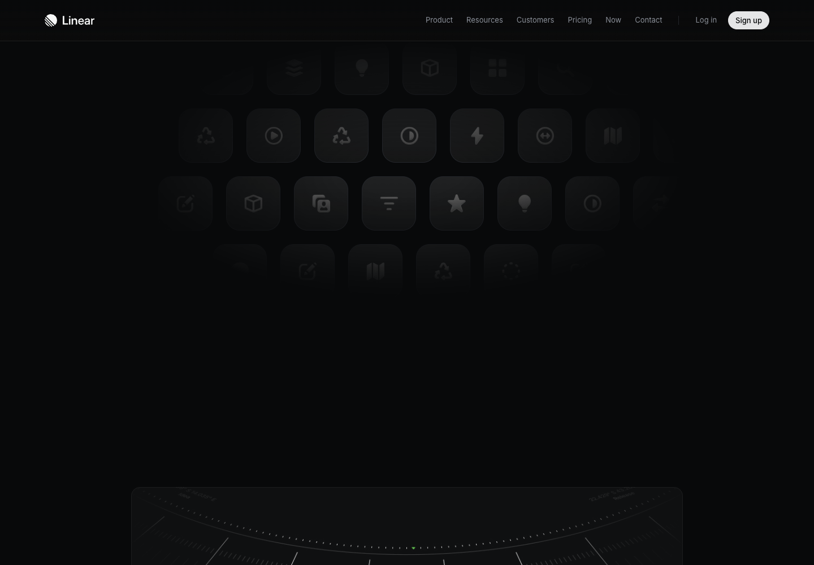
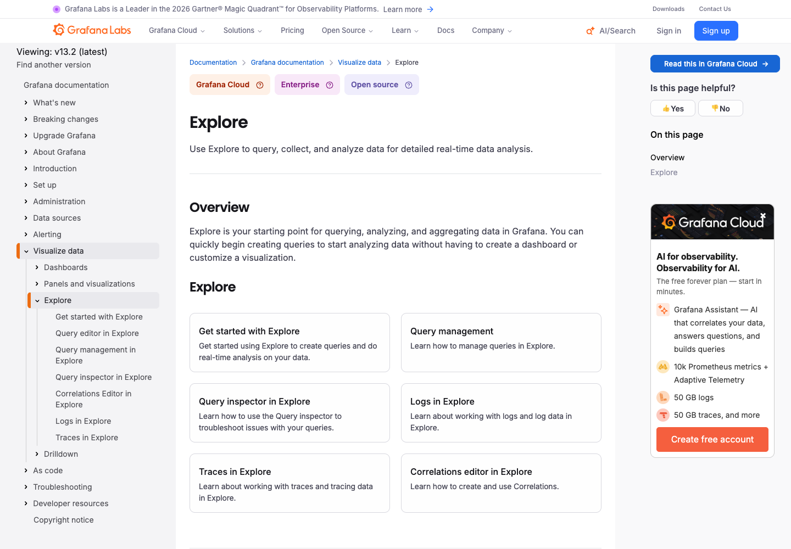

Metabase · 요약에서 근거로
후보를 클릭하면 연결된 관측과 출처를 확인하는 방식에 참고합니다.
공식 페이지
공정 조사 워크스페이스 · UI 레퍼런스 / 2026-09-17
Lazyweb MCP는 도구 목록 연결 후 429 요청 제한으로 검색을 완료하지 못했습니다. 아래는 공식 제품 페이지로 대체 조사한 자료이며 Lazyweb 검색 결과가 아닙니다.
사건 목록과 작업 영역을 분리하고 현재 선택과 상태를 짧게 표시합니다.
공식 페이지
후보를 클릭하면 연결된 관측과 출처를 확인하는 방식에 참고합니다.
공식 페이지진단 시점, 관측 히스토그램, 신호 검색을 같은 맥락에서 보여줍니다.
공식 페이지
네이비 + 청록, 밝은 캔버스, Pretendard, Lucide. 임의의 KPI 대신 실제 사건 수와 관측 기록을 보여주며 전문가 검토를 독립된 단계로 둡니다.
상세 의사결정 기록